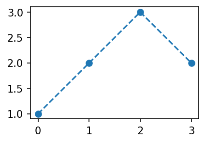

# {{<video >}}02wk-1: ㅁㄴㅇㄹㅁㄴㄹ
matplotlib

강의영상
어렵게 그림그리기
목표
- 아래와 똑같은 그림을 plt.plot()을 쓰지 않고 만든다.
fig 
Figure
fig2 = plt.Figure()Axes
ax2 = fig2.add_axes([0.125, 0.11, 0.775, 0.77])fig2
ax2.set_xlim([-0.15, 3.15])
ax2.set_ylim([0.9, 3.1])(0.9, 3.1)fig
line2 = matplotlib.lines.Line2D(
xdata=[0,1,2,3],
ydata=[1,2,3,2],
linestyle='--',
marker='o'
)ax2.add_line(line2)<matplotlib.lines.Line2D at 0x7f578ac53760>figfig2
- Line2d 오브젝트를 쓰지 않는 방법
fig3 = plt.Figure()
ax3 = fig3.add_axes([0.125, 0.11, 0.775, 0.77])
ax3.plot([1,2,3,2],'--o')
fig3
- add_axes()를 쓰지 않는 방법
fig4 = plt.Figure()
ax4 = fig4.subplots()
ax4.plot([1,2,3,2],'--o')
fig4
- 더 생략하는 방법
fig5, ax5 = plt.subplots(1)
ax5.plot([1,2,3,2],'--o')
정리 (\(\star\star\star\))
- 결국 아래는 모두 같은 코드이다.
## 코드1
plt.plot([1,2,3,2],'--o')
## 코드2
fig,ax = plt.subplots()
ax.plot([1,2,3,2],'--o')
## 코드3
fig = plt.Figure()
ax = fig.subplots()
ax.plot([1,2,3,2],'--o')
fig
## 코드4
fig = plt.Figure()
ax = fig.add_axes([0.125, 0.11, 0.775, 0.77])
ax.plot([1,2,3,2],'--o')
fig
## 코드5
fig = plt.Figure()
ax = fig.add_axes([0.125, 0.11, 0.775, 0.77])
ax.set_xlim([-0.15, 3.15])
ax.set_ylim([0.9, 3.1])
line = matplotlib.lines.Line2D(
xdata=[0,1,2,3],
ydata=[1,2,3,2],
linestyle='--',
marker='o'
)
ax.add_line(line)
fig
미니맵
- 틀잡기
fig = plt.Figure()
ax1 = fig.add_axes([0,0,2,2])
ax3 = fig.add_axes([1.4,0.2,0.5,0.5])
fig
ax1.plot([1,5,3,4],'--o')
ax3.plot([1,2,3,1],'--or')
figHW
1. 아래와 같은 그림을 그려라.
x,y = [1,2,3,4], [1,2,1,1]#